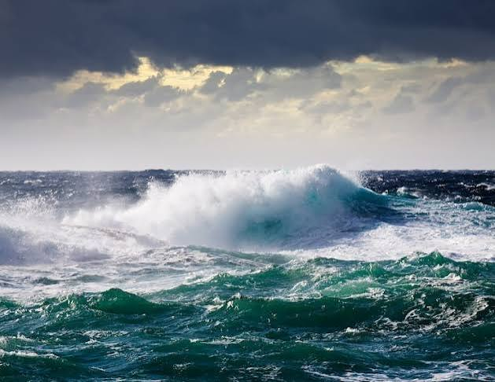

⚡ La Fuerza del Super Niño
Cuando el fenómeno se vuelve más intenso

🔥 ¿Qué es el Super Niño?
No es un fenómeno distinto, sino una versión más fuerte de El Niño. Se llama así porque el calentamiento del océano alcanza niveles muy altos: más de 2°C por encima de lo normal en zonas amplias del Pacífico. Ese calor extra desencadena cambios más grandes, más rápidos y más duraderos en todo el planeta.
Los Super Niños no ocurren cada vez: son menos frecuentes, pero cuando llegan, sus efectos se sienten en más países y con mayor intensidad. Los científicos identificaron los últimos en 1997-1998, 2015-2016 y advierten que podrían aparecer con mayor frecuencia en el futuro.
🌊 El Niño Común
- Calentamiento moderado del mar
- Cambios notables pero manejables
- Duración de varios meses
- Sequías y lluvias fuertes en algunas zonas
⚡ El Super Niño
- Calentamiento muy intenso y extendido
- Efectos más graves y en más lugares
- Duración prolongada
- Mayor riesgo de incendios, sequías y tormentas
- Afecta la agricultura y el agua en todo el mundo
🌍 ¿Por qué nos preocupa?
Un Super Niño puede afectar la vida de millones de personas. Cuando llega fuerte:
- Las cosechas se pierden en zonas amplias por falta de agua o por exceso de lluvia
- Los embalses bajan mucho y hay escasez de agua para consumo y energía
- Los incendios forestales se extienden más rápido y son más difíciles de apagar
- En zonas costeras, suben las aguas y hay más riesgo de inundaciones
- Los animales y plantas no tienen tiempo de adaptarse
Esto no significa que todo esté perdido: significa que debemos prepararnos mejor y cuidar más el planeta para que los efectos no sean tan graves.
✨ ¿Qué podemos hacer?
No podemos detener el fenómeno natural, pero sí podemos evitar que sea más dañino. Reducir la contaminación, proteger los bosques y cuidar el agua ayuda a que el planeta no se caliente tanto y los Super Niños no sean tan frecuentes ni tan fuertes.
La preparación también cuenta: saber guardar agua, tener planes de protección en el colegio y en casa, y compartir lo que sabemos con quienes nos rodean. Estar informados nos hace más fuertes.
"La fuerza de la naturaleza es grande, pero la unión de las personas para cuidarla es aún mayor."